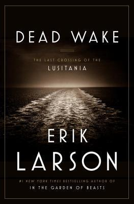

Dead Wake: The Last Crossing of the Lusitania
- Read on 2017-01-01
- Rating: ️️️️️
- Format: 🎧 (13 hours 4 minutes)
An fascinating (and tragic) tale of a civilian-filled ship, sunk by a German submarine. I read this a while ago, and I remember feeling like the British were (or rather, Churchill was) being cowardly. That said, I've never read anything about this from their/his perspective. At the same time, it seems like the ship operators were being fool-hardy in their decision to sail anyway, knowing of the threat. (Shows how much of a risk-taker I am.) Regardless, I thought Erik Larson's style of how he relayed the events was interesting - it helped build suspense, and keep me interested. Unfortunately, I also feel like he interjects his opinion more than he should while relaying facts.
- Prior: Golden Son
- Next: The Adventures of Tom Sawyer